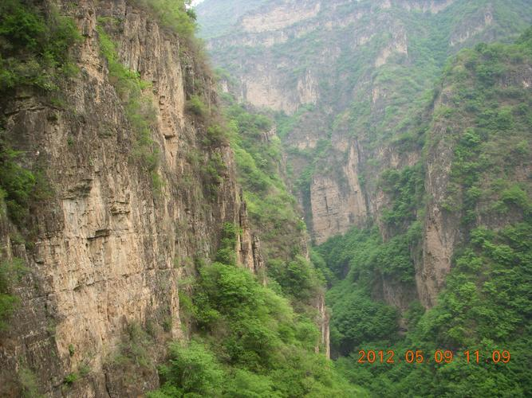

百里峡

野三坡百里峡是国家5A级景区，国家地质公园。位于河北省涞水县野三坡镇苟各庄村，百里峡总面积110平方公里，与北京市房山区接壤，距北京市中心115公里，是京西旅游景点中一颗最耀眼的明珠。被誉为“天下第一峡”的百里峡是野三坡独具特色的景区之一，是目前国内发现规模最大、景观最为奇特的嶂谷地貌景区。
百里峡由三条迂回曲折的嶂谷组成，三条峡谷总长105华里，“百里峡”由此得名。是游玩野三坡必去的地方。
百里峡也曾经作为央视版《三国演义》《赤壁》《寻秦记》《萧十一郎》等众多影视剧的外景拍摄地。
峡谷内群峰矗立，峻岭巍峨，峡谷幽深，小溪淙淙，野生动植物遍布沟壑，生态环境原始自然。
这里奇特的构造—冲蚀嶂谷地貌造就了气温冬暖夏凉，盛夏最高气温不超过22℃、是休闲避暑的理想胜地。
峡谷中空气清新、清风徐徐，富含负氧离子，深深呼吸，沁人心脾，令人神清气爽，人们形象的称这里为“天然的大氧吧”。
游人进入峡谷时，“天下第一峡”几个大字格外醒目，这个题字是1994年5月原国家政协副主席、中国社会科学院院长胡绳游览完百里峡后题写的。
多年来，百里峡为广大游客展现了复杂的地貌、险峻的山石和原始纯粹的自然景观，着实不负“天下第一峡”的美誉。